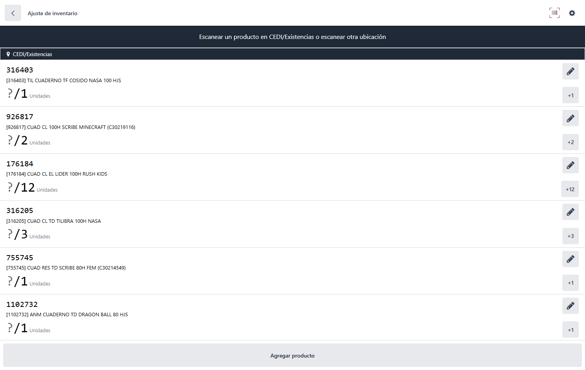
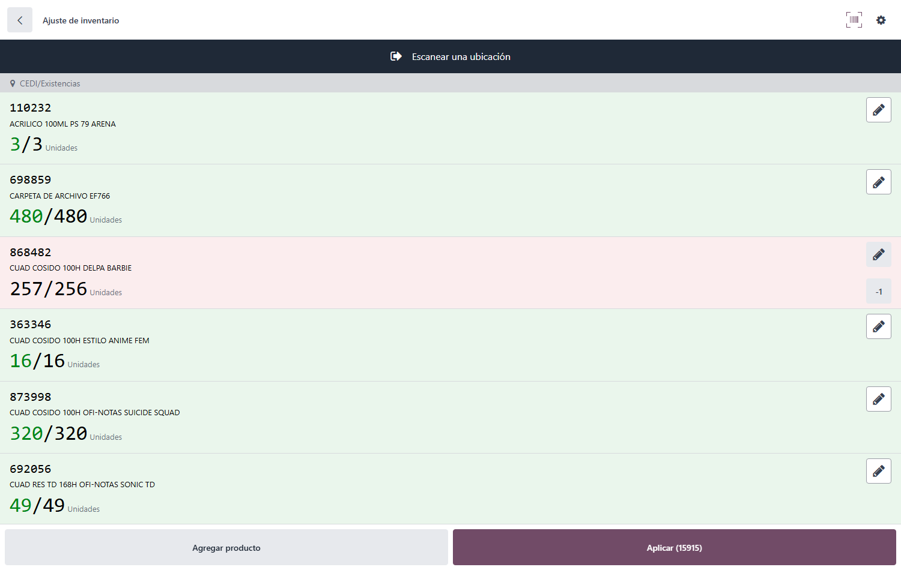
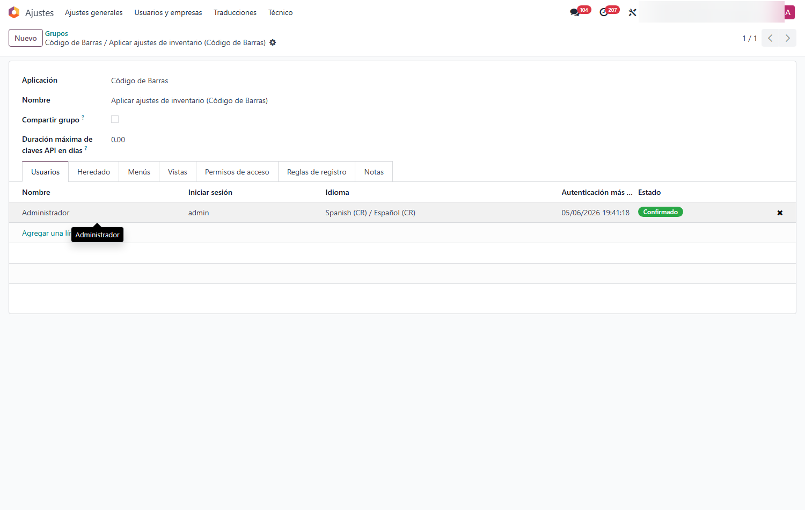

Restringir Aplicar Ajustes en Código de Barras
Oculta el botón 'Aplicar' de los ajustes de inventario en la app móvil de Código de Barras de Odoo 18 para los operarios sin permiso. Así evita que un colaborador cierre por accidente un conteo a medias —que descuadraría el stock— y centraliza la validación final en manos del encargado.
Capturas del proyecto
01 / 05




Un toque accidental en la PDA y el inventario queda descuadrado
Durante un conteo físico o cíclico, basta que un operario presione por error el botón 'Aplicar' en su colector para que Odoo cierre el ajuste con datos parciales: los productos que aún no se habían contado se asumen como faltantes y el stock real se descuadra. Corregirlo después cuesta horas.
Este módulo quita ese riesgo de raíz: el botón 'Aplicar' solo aparece para los usuarios con un permiso específico. El resto del personal cuenta tranquilo desde la app de Código de Barras, sin posibilidad de cerrar el conteo, y el encargado valida al final —desde la PDA si tiene el permiso, o desde el escritorio bajo supervisión.
Funcionalidades clave
-
Botón oculto al operario
En la app de Código de Barras, 'Aplicar' desaparece para quien no tiene el permiso.
-
Permiso por usuario
Un permiso dedicado que no se asigna a nadie por defecto; se otorga a los encargados.
-
Sin cierres parciales
Evita que un clic accidental aplique el ajuste a medio conteo y descuadre el inventario.
-
El escritorio intacto
Solo afecta el botón de la app Código de Barras; el flujo de escritorio funciona igual que siempre.
-
Cuenta uno, aplica otro
Varios operarios cuentan por zonas; el supervisor consolida y aplica al final.
-
Totalmente reversible
Si se desinstala, el botón vuelve a mostrarse para todos, sin tocar datos.
Tecnología detrás del producto
¿Un conteo cerrado a medias te volvió a descuadrar la bodega?
Aseguro tus conteos de inventario y defino quién puede aplicar ajustes desde el colector.